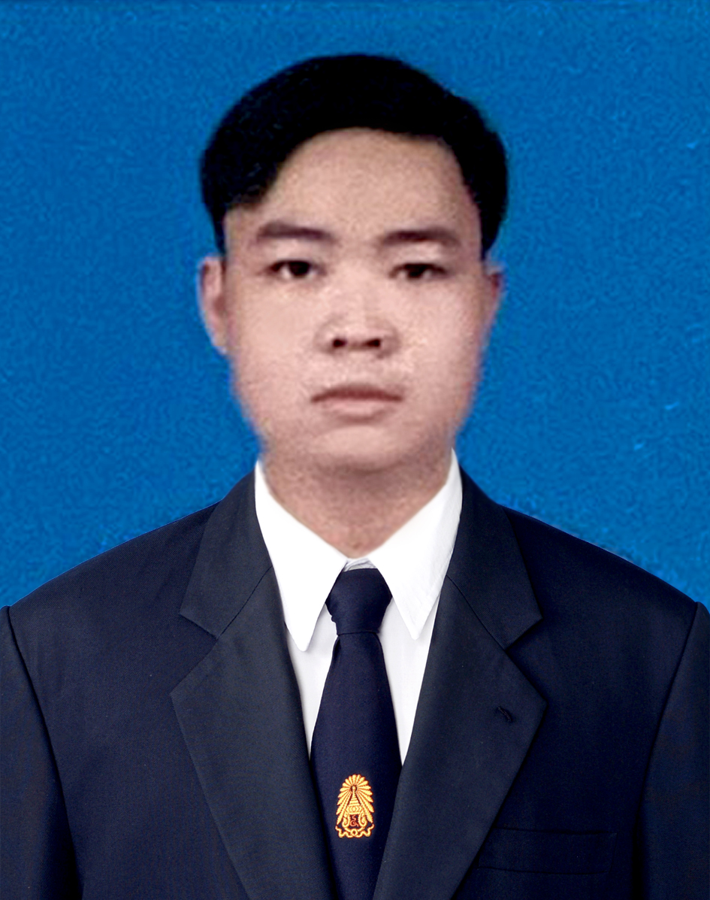
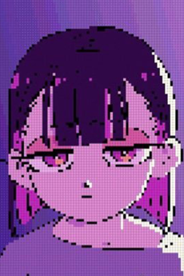
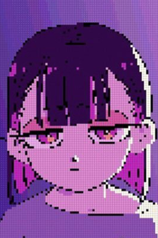

Teekhatat Srisophon
Instrument & Control Engineering
Contract
Email: sytam23456@gmail.com
Phone: 086-406-7816
Facebook: Teekhatat SrisophonInternship
Amatabgrim ( Rayong 5 ).
ThaiPresidentfood Sriracha.
Languages
English(communicate) ,Thai
Skills
- Calibrate
- Write&Read P&ID
- Computer Basic Skill

 


PersonalData
NickName : Tam
Brith of Date : 9/9/2000
Age : 23
Religion : Christian
Education
Vocational CertificateThai Austrian Technical College
Electronics Department
High Vocational CertificateThai Austrian Technical College
Instrument&Control Department
Bachelor's degreeKING MONGKUT'S UNIVERSITY OF TECHNOLOGY NORTH BANGKOK
Instrument&Control Department
Amatabgrim ( Rayong5 ) - 4month
Amatabgrim is a Electrical plant I have to be apart of Engineering team for a 4month. Then i have too much learning about Fundamental of Instrument and Fundamental of Calibration. Electric wiring, Interior.
ThaiPresidentfood Sriracha - 2month
ThaiPresidentfood Sriracha is a first of factory who made a first instant noodle brand of thailand. on my duty is Calibrate all of Digital Balance in this factory i have to learn how to Calibrate all of them.